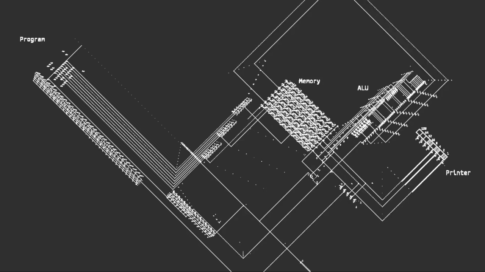

<div class="lesson_page">
  <mat-tab-group id="tab_group" (selectedTabChange)="onTabClick($event.index)">
    <mat-tab label="Intro: GoL">
      <h1>Introduction: Game of Life</h1>
      <br>
      <p>Welcome to the tutorial part of the Game of Life experience, the so-called Tour of Life. </p>
      <br>
      <p>Here, you will learn from the ground up, the core principles of the Game of Life, as first imagined by the late English mathematician John Horton Conway in 1970. You will slowly work your way through a set of lessons and exercises, designed to teach you everything, from the very basic rules of Life, to some of the most complex patterns found within it.
        By the end of the tutorial, you will hopefully feel confident in predicting the developments of small cell clusters inside the Game of Life, be able to create some of the important patterns on your own, and you will even dip your toes into the world of computer logic.
      </p>
      <p>The Game of Life is often described as a zero player game, because the only input from the user happens at the very start, where they choose an initial cell configuration. After that, the simulation is run and the "player" can all but watch.
          To get a little bit more technical, Life is a so-called cellular automaton. This is basically a grid of cells, each having a state. Cells inside this grid can only exist in a certain number of states, which they switch between. The number/type of states a cell can "inhabit" depends on the automaton.
          The cells in the Game of Life basically have only two states. Dead or alive.</p>
      <p>Each cell has a specific neighborhood, based on which it transitions between states. This is the basic principle behind the evolution of a cellular automaton.</p>
      <br>
      <p>The tour of Life was designed as a highly interactive experience. This means, that in order for you to get the most out of it, you should be as curious as possible, and interact with the lesson presented to you as much as you can. Some lessons come in the form of an exercise, where you will even be asked to complete a pattern yourself, to really test your skills. However even for non-exercise type lessons, you can still interact with the simulation in numerous ways, which should help you understand the concepts even better.</p>
      <p>Each chapter is split into 2 lessons. Exercises are marked as such in the header, and you will know that a given lesson is an exercise, by the indicator of how many cells you are allowed to place on the grid.
          Each lesson contains such a simulation grid, where the discussed pattern (or combination of patterns) will be shown, and a description of it. Be sure to check out the description before messing with the simulation for the optimal learning experience.
          Under the simulation grid, there is a set of controls that let you influence the simulation. Hover over them with the mouse for a brief explanation.
      </p>
      <p>In addition to the basic simulation controls for pause/play, skip forward/backward, or the button for restoring the simulation to it's initial state, you have the icon in the shape of the letter "i", which will lead you to an external resource that contains more information on the currently discussed topic.
          The eye icon is the prediction mode you can also find in the 2D Sandbox. It will give you a preview of what will happen to each cell in the next epoch. <br>The color coding is as follows:</p>
      <p id="overpopulation">This cell will die due to overpopulation</p>
      <p id="underpopulation">This cell will die due to underpopulation</p>
      <p id="birth">This cell will be born due to reproduction</p>
      <p id="survival">This cell survives, unaffected</p>
      <p>The last unexplained icon, the pencil, copies the pattern from the lesson into the sandbox, for you to use all it's tools to properly examine it. You should really explore and get used to all of these options, as they will greatly improve your experience with the lessons.</p>
      <p>For the initial exercises, the zoom on the camera is locked, to force you to focus on the pattern being introduced to you. This will change as you go on. The zoom settings and restrictions have been carefully chosen to not make the simulator unwieldy inside the lesson environment, and also to direct your attention to the important parts.
          If you haven't found it out for yourself already, you can use the middle mouse button to pan the camera around, and the mouse wheel allows you to zoom in or out, if the lesson permits it.
          By left-clicking with (and/or dragging) the mouse on any empty space, you can create a cell in it's place. Using the right-click lets you delete a cell. </p>
      <br>
      <p>With this in mind, you should now be fully equipped to tackle your first lesson. Use the lesson navigation at the top of the screen to select it. And don't worry, if you ever get stuck, there are some hints placed around the Tour of Life that should help you out.</p>
      <p>Have fun!</p>
    </mat-tab>

    <mat-tab *ngFor="let tab of lessons; let i = index" label="{{tab.header}}">
      <ng-template matTabContent>
        <h1>{{tab.chapter}}</h1>
        <div class="lessons">
          <mat-card class="lesson_container" [class.mat-elevation-z8]="true" *ngFor="let l of tab.lessons; let idx = index">
            <ng-container>
              <div class="renderer" id="{{i+1+'lesson'+idx}}"></div>
              <div class="controls_container" *ngIf="!(l.cell_layout.length == 0 && l.lesson)">
                <div class="controls">
                  <a mat-icon-button color="primary"
                          matTooltip="Wiki reference" matTooltipPosition="above"
                          href="{{l.reference}}">
                    <mat-icon>
                      info
                    </mat-icon>
                  </a>
                  <button mat-icon-button color="primary" matTooltip="Toggle prediction mode"
                          matTooltipPosition="above" (click)="predictionMode(idx)">
                    <mat-icon>
                      visibility
                    </mat-icon>
                  </button>
                  <button mat-icon-button color="primary"
                          matTooltip="Go back by one epoch" matTooltipPosition="above" (click)="revert(idx)">
                    <mat-icon>
                      skip_previous
                    </mat-icon>
                  </button>
                  <button mat-icon-button color="primary" matTooltip="Play/Pause the Game"
                          matTooltipPosition="above" (click)="play(idx)">
                    <mat-icon *ngIf="(idx==0&&!running_a)||(idx==1&&!running_b)">
                      play_arrow
                    </mat-icon>
                    <mat-icon *ngIf="(idx==0&&running_a)||(idx==1&&running_b)">
                      pause
                    </mat-icon>
                  </button>
                  <button mat-icon-button color="primary"
                          matTooltip="Advance the game by one epoch" matTooltipPosition="above"
                          (click)="advance(idx)">
                    <mat-icon>
                      skip_next
                    </mat-icon>
                  </button>
                  <button mat-icon-button color="primary"
                          matTooltip="Reset the board" matTooltipPosition="above"
                          (click)="reset(idx)">
                    <mat-icon>
                      replay
                    </mat-icon>
                  </button>
                  <button mat-icon-button color="primary"
                          matTooltip="Edit in Life2D" matTooltipPosition="above"
                          routerLink="/life2d/{{i + ';' + idx}}">
                    <mat-icon>
                      edit
                    </mat-icon>
                  </button>
                </div>
              </div>
              <div class="explanation">
                <ng-container *ngIf="!l.lesson">
                  <h3 style="margin-top: -1em">Placeable cells: {{l.placeable}}</h3>
                </ng-container>
                <h2>{{l.title}}</h2>
                {{l.description}}
              </div>
            </ng-container>
          </mat-card>
        </div>
        <div id="chapter_tip" *ngIf="tab.hint">
          <h3 style="font-weight: bold; margin-right: 1em;">Chapter hint:</h3><p>{{tab.hint}}</p>
        </div>

      </ng-template>

    </mat-tab>


    <mat-tab label="Touring Machine">
      <h1>Touring Machine</h1>
      <br>
      <p>The term "Turing Machine" or something being "Turing complete" has been mentioned a couple times already throughout the past lessons. Before we move on to the final couple chapters of this tour, it should probably be cleared up.</p>
      <p>Named after the British mathematician, and father of the modern computer, Alan Turing, it is an abstract model of a machine, that can simulate any given algorithm, despite it's apparent simplicity. In this way, it's description is not too dissimilar from the one you were given to the Game of Life.
         A Turing machine is generally thought of as having an infinitely long input tape, that binary values can be either read from, or printed to. Using simple instructions and binary "calculations", it is thus possible, given enough time, to simulate an algorithm of arbitrary complexity. </p>
      <p>When a system is deemed Turing complete, it simply means, that it's capable of simulating a Turing machine. It's therefore possible for a Turing complete system to simulate all tasks accomplishable by general modern computers.</p>
      <p>You've already heard, and seen proof, that the Game of Life is Turing complete. Or at least, that components can be simulated within Life, that make it so. This might lead you to the question: "Can I actually build a real computer inside Life?"
          Naturally, by nature of it's Turing completeness, this can, and has been done. A fully fledged, 8-Bit programmable computer, complete with the Arithmetic and Logic Unit (ALU, part of a CPU that carries out arithmetic and logic operations), Memory and even a display.
          It was made by Nicolas Loizeau, and you can properly examine it <a href="https://www.nicolasloizeau.com/gol-computer">here</a>. If you have been properly following the last few exercises, you might recognize his website, as it heavily influenced the form of the logic gates you have been presented with.
          Big thanks to Nicolas!</p>
      <br>
      
      <br>
      <br>
      <p>If we take it one step further, we could also say, that the Game of Life is not only a Turing machine, but a universal Turing machine. Where a standard Turing machine is capable of simulating any arbitrary algorithm, you would have to create a specific machine for each algorithm you are trying to simulate.
          The universal Turing machine however takes the standard input tape you know from it's less advanced sibling, along with a description of a machine that would solve a certain problem. With this, the universal Turing machine can simulate the input machine and using the content of the tape, simulate it, and with it the algorithm itself.
          A universal Turing machine can simulate any other machine, and so can the Game of Life.</p>
    </mat-tab>

    <mat-tab label="Recursion">
      <h1>Recursion</h1>
      <br>
      <p>The fact that you can build a computer inside the Game of Life might not seem very interesting to you at the moment. After all, there are countless Turing complete systems, and thousands of examples all over the internet, of people, building simple computers out of the most bizarre things.</p>
      <p>For example, and you might be surprised to learn this, the trading card game Magic: The gathering is also technically considered Turing complete. Meaning, using a certain subset of the total cards, the rules of the game allow for a Turing machine to be constructed.
      Funnily enough, this means that you could build a computer out of MTG cards, that would itself be capable of playing MTG.</p>
      <p>Another, more common example is the game Minecraft. You have probably seen hundreds of videos online of people building computers inside the game. Granted, it is a fair bit easier to construct something resembling a computer inside the game, since it already includes a lot of the necessary building blocks out of the box, without a need for abstraction.</p>
      <p>These are examples of what's called unintentional Turing completeness. The creator of Magic: The gathering (although he was a mathematician), or the developer of Minecraft did not set out to create a Turing complete system within their games. It just sort of happened.
      The same goes for John Conway and the Game of Life who did not initially set out to create a Turing machine. </p>
      <br>
      <br>
      <p>If you think about it, what you are doing right now is using the computer to simulate Life. The sandbox, or even the lessons are not recordings, but the actual Game of Life being computed in real time.
          And as you have just found out, you can simulate a computer inside the Game of Life. Where does that lead you?</p>
      <p>Yes. Probably the most interesting feature of the Game of Life, stemming from the fact that it is Turing complete, is that you can build a Turing machine, that can run Life itself.
          You can therefore simulate the Game of Life, inside the actual Game of Life. This might be a bit difficult to imagine. Why don't you move on to the last chapter of this tutorial, and see for yourself, what this actually means and looks like.</p>
    </mat-tab>

    <mat-tab label="Life inside Life">
      <h1>The Game of Life simulated within the Game of Life</h1>
      <video controls width="100%" style="margin-top: 1em; margin-bottom: 1em">

        <source src="../../../assets/life_in_life.mp4"
                type="video/mp4">

        Sorry, your browser doesn't support embedded videos.
      </video>
      <p>This screen capture depicts the oscillator pattern known as Blinker being simulated within Life itself. This simulation would be too costly to do in real time inside a web application, therefore only a video has been provided as a sort of "proof of concept". The actual simulation was done in a program called <a href="http://golly.sourceforge.net/">Golly</a>, using a python script shipped with it, called metafier.py</p>
    </mat-tab>


  </mat-tab-group>
  <!--  <div class="next_prev">-->
  <!--    <button mat-icon-button>-->
  <!--      <mat-icon>keyboard_arrow_left</mat-icon>-->
  <!--    </button>-->
  <!--    <button mat-icon-button>-->
  <!--      <mat-icon>keyboard_arrow_right</mat-icon>-->
  <!--    </button>-->
  <!--  </div>-->


</div>
